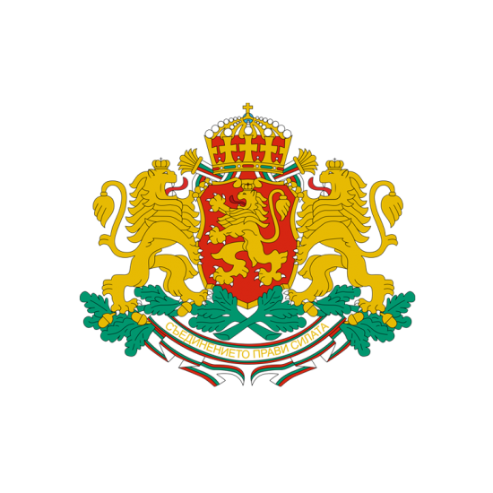
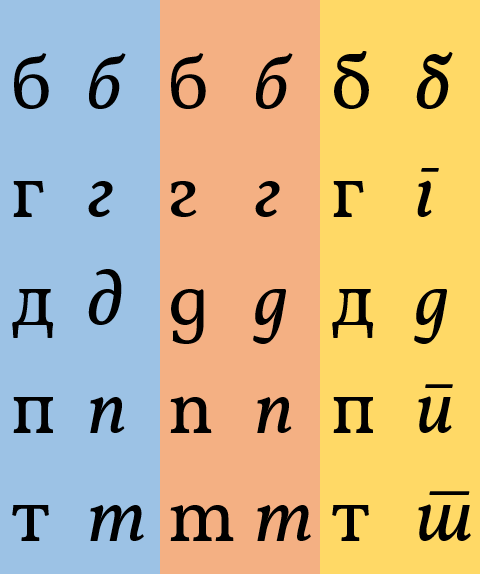

Отчет на Министерство на електронното управление
за периода 12.2021 – 07.2022


и изведохме политиката за електронно управление и модернизация на най-високо държавно ниво.
Само за 7 месеца свършихме повече работа за електронната идентификация отколкото за последните 5 години.
- По наше предложение беше прието Решение на Министерския съвет за изграждане на схема за електронна идентификация от МЕУ със срок до края на годината.
- Подготвихме и обсъдихме с широк кръг експерти техническа спецификация за мобилно средство за електронна идентификация.
- Възложихме изграждането на системата, като работата по нея вече е напреднала
- Подготвихме нормативните изменения за използване на системата за електронна идентификация
Подготвихме законови изменения, с които да направим електронното управление по-удобно и по-достъпно:
- Отпадане на задължението за заявяване с квалифициран електронен подпис.
- Отпадане на удостоверения, така че гражданите да не са куриери на администрацията.
- Въвеждане на задължение за администрацията да напомня за изтичащи срокове на документи
- Уреждане на гъвкави възможности за посредници на електронни административни услуги.
- Стартиране на мащабна регистрова реформа с цел дигитализация на информацията в държавата и лесна интеграция между системите
- Създаване на възможност за изцяло електронно връчване на фишове, актове и наказателни постановления
- Намаляване на таксите за предоставяне на административни услуги по електронен път
- Покриване на целите, поставени в Плана за възстановяване и устойчивост
Въведохме антикорупционна прозрачност
Повишихме нивото на киберсигурност в държавната администрация, за да бъдат защитени институциите ни в среда на нарастващ риск
- Отпадане на синия талон към свидетелството за управление на МПС
- Отпадане на стикера за гражданска отговорност от предното стъкло на автомобилите
- Възможност за плащане на електронни фишове без да има нужда да бъдат връчвани присъствено
- Отпадане на необходимостта от смяна на шофьорска книжка при смяна на адрес
- Отпадане на изискването за попълване на излишни данни в заявлението за български лични документи
Изпълнихме със съдържание контролните функции в областта на електронното управление:
- Осъществихме контрол на редица нормативни актове, за да не електронизираме един процес, докато други два минават на хартия.
- Обработихме сигнали от граждани за неспазване на изискванията на Закона за електронното управление и отправихме задължителни предписания към администрациите.
- Инициирахме съгласуване на системата за електронно гласуване на Висшия съдебен съвет, за да бъде спазен Законът за съдебната власт
- Извършихме 46 проверки за спазване на Закона за електронното управление
- Извършихме 17 проверки за спазване на Закона за киберсигурност
- Извършихме 56 проверки за спазване на изискванията за достъпност на интернет страници
Подпомогнахме редица институции да започнат дигитализация на вътрешни процеси и услуги:
- Съвместно с Министерството на иновациите и растежа инициирахме решение на Министерски съвет за оптимизиране на процесите по издаване на разрешения за работа на чужденци с хоризонт 9 месеца.
- Отправихме препоръки към Министерствата на туризма и външните работи във връзка с български визи, подновяване на документи на български граждани и консулски услуги.
- Съвместно с Министерство на образованието и науката подготвихме отпадането на редица бележки и удостоверения в образователния сектор.
- Подпомогнахме Министерство на здравеопазването с ускореното въвеждане на електронно здравеопазване.
- Подпомогнахме Mинистерство на правосъдието в инициативите им за електронизиране на регистри в сектор “Правосъдие”.
- Подпомогнахме Агенция “Пътна инфраструктура” в анализа на проблемите с тол-системата и тяхното решаване.
- Участвахме заедно с Министерството на регионалното развитие и благоустройството в подготовката на проектите за дигитализация на данни и процеси от областта на усторйственото планиране и строителството.
- Съвместно с други институции подготвихме първия етап на електронизирането на трудовите книжки и начертахме следващите стъпки
- Подпомогнахме екипа на вицепремиера по ефективно управление и Български пощи в предоставянето на административни услуги като посредник
- Участвахме в изготвянето на изцяло електронен епизод "раждане", за да спестим на гражданите всички бюрократични стъпки около раждането на дете
- Изготвихме изменения на наредба, с която отпадат изискванията за печати и щемпели при наемане на държавни служители
- Подпомогнахме Българска агенция по безопасност на храните да осигури устойчвиост на информационните си системи
Предоставихме централизирани, споделени ресурси и услуги на голям брой администрации
- Близо двойно повишение в използванато на е-услуги, е-връчване и е-плащане
- 35 нови институции, използващи данни чрез системата за междурегистров обмен
- 7 нови регистъра включени в системата за междурегистров обмен
- 21 нови институции с ресурси в Държавния облак
- 26 нови институции с централизирани пощенски кутии
- 115 нови връзки с единната електронна съобщителна мрежа
- 48 нови абоната на единната електронна съобщителна мрежа
- 10 нови институционални интернет страници
- 54 нови институции използващи централния виртуален POS терминал на МЕУ
- Пилотно споделено ИТ обслужване за 2 администрации
- Постигнахме 23% за дигитализация от общата стойност на плана
- Повишихме очакваната ефективност на проекта за дигитализация на регистри
- Ревизирахме различни проекти в посока на по-висока ефективност и защита на обществения интерес
- Предвидихме разширяване на единната електронна съобщителна мрежа на администрацията, за да стигне до всички общински центрове
Обновихме и подготвихме приоритетната ос за дигитализация в Програмата за научни изследвания, иновации и дигитализация за икономическа трансформация
- Поставихме основите на обща политика за данните и подобрихме значително програмите, насочени към развитие на възможностите за работа с данни на администрация, наука и бизнес
- Договорихме с Европейската комисия система за съвместно управление на програмата от три министерства
- Задълбочихме допирните точки и взаимодействието с другите приоритети в програмата
- Обновихме мерките, свързани с киберсигурност и разширихме обхвата им

Приехме правила за използване на българска форма на кирилицата в интернет страниците на институциите